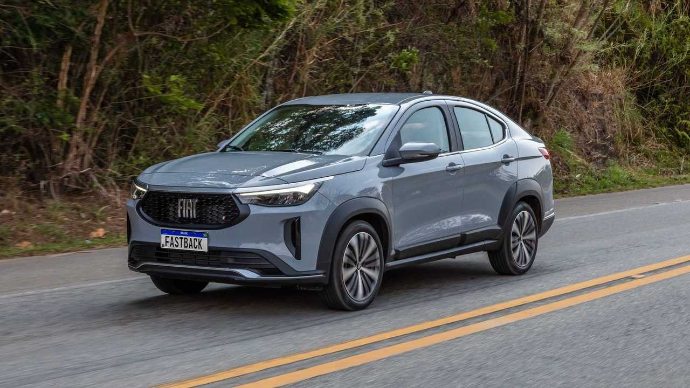

Top 5 Carros de 2024
- Renault Kwid
- Peugeot 208
- Volkswagen Virtus
- Nissan Sentra
- Fiat Fastback
O Renault Kwid é o único modelo da categoria com quatro airbags de fábrica. Além disso, vem equipado com 2 ISOFIX para assentos infantis, sendo uma das melhores opções de 2024.
O Peugeot 208 é um hatch compacto que se destaca pela dirigibilidade gostosa, com direção ágil e suspensão confortável e segura. Equipado com motor 1.6, apresenta um rendimento adequado às suas características. Além disso, o carro possui freios confiáveis, proporcionando uma experiência de condução estável e agradável.
O Volkswagen Virtus 2024 é um sedã compacto que oferece uma excelente relação custo-benefício. Todas as versões vêm equipadas com direção elétrica, ar-condicionado, vidros e retrovisores elétricos, além de freios ABS, 4 airbags, controle de tração e estabilidade. A partir da versão Comfortline, há opcionais como chave presencial e partida por botão, o que agrega ainda mais valor ao modelo.
O Nissan Sentra é um sedã sofisticado e bem equipado. Ele teve origem no Japão na década de 1960 com o modelo Nissan Tsuru, símbolo de longevidade e sorte. O Sentra 2024 vem com uma proposta moderna, trazendo conforto, tecnologia e segurança, sendo uma excelente opção na categoria dos sedãs médios
O Fiat Fastback 2024 é um SUV que combina estilo e desempenho. Equipado com uma boa gama de itens de série, ele oferece conforto e tecnologia, mas deixa a desejar em alguns aspectos, como a ausência de piloto automático adaptativo e a limitação de apenas quatro airbags. Apesar disso, é uma escolha competitiva frente a modelos como o Honda HR-V e o Volkswagen T-Cross.
